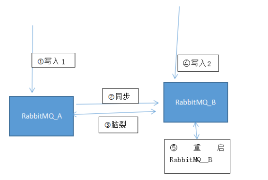

RabbitMQ 脑裂丢数据调研
RabbitMQ 脑裂的情况下丢不丢数据？
1. 背景
RabbitMQ在使用过程中曾经出现过错误
Network partition detected Mnesia reports that this RabbitMQ cluster has experienced a network partition. There is a risk of losing data. Please read RabbitMQ documentation about network partitions and the possible solutions .
这是在网络不稳定情况下，rabbitmq的脑裂。在错误提示中，提到有可能丢失数据。这个情况下只有重启rabbitmq才得以解决。
2. 分析
源码分析参考 ： RabbitMQ 启运过程
从RabbitMQ启动，数据加裁逻辑过程中，可以看出
在从节点队列启动的时候，你是会先把当前队列所在文件夹下的索引 进行清空，同时清空当前节点上当前队列的内存数据。
然后再从队列主节点上同步数据回来。
如果在脑裂出现的情况下，又连接到队列的从节点所在服务器上，并写了数据，那数据就在从节点上，并没有同步到原本的主节点上，假如这个时候把当前这个RabbitMQ节点进行重启，那RabbitMQ上的数据就会丢失，重新从主节点上进行数据同步。

按上面图逻辑顺序，理论上在 第四步（写入2）中 写入的数据，在重启RabbitMQ_B节点后，数据是会丢失的
3. 还原现场
机器列表:
- 10.4.4.199
- 10.4.4.200
Erlang版本:18.3
RabbitMQ版本:3.6.1
1) 10.4.4.199 和 10.4.4.200 组成 RabbitMQ集群，当前集群运行正常
2) 设置 vhost:testqueue 策略
Pattern .*
Apply to all
Definition
Priority 0
ha-mode: exactly
ha-params: 2
3) 连接任何一个节点，往队列vhost:testqueue 队列:direct0000 写入数据
4) 用管理工具，可以查看到2个管理节点上都有这条消息
5) 10.4.4.199 和 10.4.4.200 2个节点上防火墙都把4369 和 25672 节点进行关闭，不让连接
6) ssh 连接10.4.4.200 节点并且通过tcpkill 杀死现有的 与10.4.4.199 25672 端口的连接
tcpkill net 10.4.4.199 and port 25672
7) 此时 2 个节点RabbitMQ都认为对方不存在 ，并且两个节点都提升为主节点了
8) 连接 10.4.4.200 节点并且往 往队列vhost:testqueue 队列:direct0000 写入新数据
9) 在10.4.4.200 节点上可以看到10.4.4.200 有2条数据，但是在 10.4.4.199 还是只有1条数据
10) ==把各自的防火墙再打开，脑裂出现==
11) 重启10.4.4.200 节点上的RabbitMQ
12) 重启完。10.4.4.200 上最后写的数据丢失，只能看到原有10.4.4.199上的数据
4. 措施
在RabbitMQ外转负载均衡层，采用所有连接只打到其中一台RabbitMQ上，当被连接的那一台RabbitMQ宕机的情况下，再由负载层自动发现，并且把有连接再打到另一台RabbitMQ上，避免这个MQ之间网络出问题造成的数据丢失